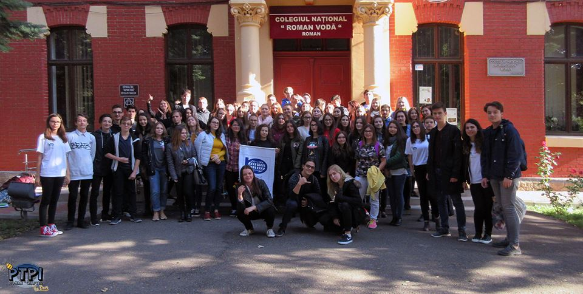

PEOPLE TO PEOPLE INTERNATIONAL - ROMAN CHAPTER
PEACE THROUGH UNDERSTANDING
PEOPLE TOPEOPLE INTERNATIONAL
Prin oportunitățile din mediul internațional și proiectele pe plan local, oferim tinerilor o dezvoltare personală cât mai bogată, pregătindu-i să devină adevărați oameni de valoare.
Membrii People to People International- Roman Chapter au cu toții un singur țel: să ajute comunitatea în care trăiesc în cât mai multe moduri posibile. Fondată in 1956 de președintele Dwight D. Eisenhower, ONG-ul promovează prietenia și ințelegerea reciprocă la nivel global prin programe educaționale, culturale și umanitare.
PTPI pentru mine
Aceasta familie m-a ajutat enorm in dezvoltarea mea personala, in viata de zi cu zi, in societate.
Am cunoscut o multime de oameni frumosi
Am participat la zeci de strangeri de fonduri pentru copii cu cancer sau orfani si divertisment pentru tineret.
Am fost si in tari straine in care am facut cursuri depsre viata politica sau coordonari de proiecte, spre exemplu poza de alaturi este in Taormina, Sicilia
Am auzit de aceasata asociatie de la prietenii mei mai mari cand eram in gimnaziu, dar este un ONG pentru liceeni, asadar nu am putut intra
Cand am intrat in clasa a 9-a primul lucru la care m-am gandit a fost sa intru in aceasta familie
8 luni mai tarziu candidez pentru o functie in conducere si datorita implicarii mele pe parcursul anului scolar am fost ales de catre voluntari
De cand sunt la conducere am incantat asociatia cu proiecte noi cu scop caritabil, dar si distractiv( ajutor pentru copii cu canncer sau orfani, am donat bani pentru un azil, Treasure Hunt etc.